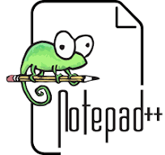

1.HTML
The HyperText Markup Language or HTML is the standard markup language for documents designed to be displayed in a web browser. It defines the content and structure of web content. It is often assisted by technologies such as Cascading Style Sheets (CSS) and scripting languages such as JavaScript. Web browsers receive HTML documents from a web server or from local storage and render the documents into multimedia web pages. HTML describes the structure of a web page semantically and originally included cues for its appearance.

2.PHP
PHP (recursive acronym for PHP: Hypertext Preprocessor) is a widely-used open source general-purpose scripting language that is especially suited for web development and can be embedded into HTML.
3.STATIC
A static logo, quite simply, is an unmovable logo. When you hear the word ‘static logo’, think classical logos –logos which comprise of only one brand icon which stays same over the years. This logo has a fixed composition, elements, shapes and colors. The only variation you may see in such a logo is its rendition in black and white from a colored version or a slight update after 10 or 20 years.
4.DYNAMIC
Dynamic logos are movable or fluid logos which change their looks with the context. Often, these logos have multiple iterations –they can change their shapes, colors, and forms with each individual viewing, or with the turn of events. Sometimes, these logos have a fixed framework which allows movement within it, at other times, even the framework is fluid and changeable enough. Two very popular examples of dynamic logos include the Google Logo, which changes form with context and events, and the AOL logo, which takes on different shapes and sizes.

5.WEB APP
Web application, computer program stored on a remote server and run by its users via a Web browser. A Web application is an advantageous form of software because the use of browsers allows the application to be compatible with most standard computers and operating systems. Moreover, the application does not take up memory on a computer’s hard dive and is accessible from nearly any computer or device a person might use. Multiple users can even use the same application at the same time, allowing for simultaneous participation. Although Web applications always require a network connection, this limitation has lessened in importance as the Internet has become more and more ubiquitous.
6.NOTEPAD++
Notepad is a simple text editor for Microsoft Windows and a basic text-editing program which enables computer users to create documents.
7.NOTEPAD
Notepad is a generic text editor included with all versions of Microsoft Windows that lets you create, open, and read plaintext files with a .txt file extension. If the file contains special formatting or is not a plaintext file, it cannot be read in Notepad. The image shown here is a small example of what the Notepad may look like while running.